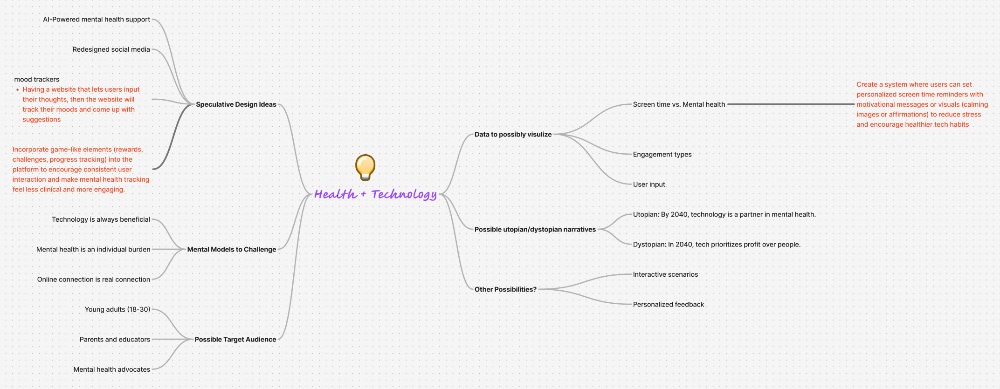

Overview
Project Title: Designing Futures: Human Designers vs. AI
This project explores speculative utopian and dystopian futures focused on the evolving relationship between human designers and artificial intelligence. Users are prompted to make choices that shape different narrative outcomes.
Target Audience: Designers, tech enthusiasts, educators, and students interested in the future of creativity and AI.
Goals: To encourage reflection on future paths for design practice and the ethical implications of AI integration.
Brainstorm Image:
UX Research
Comparative research included interactive narratives (like Bandersnatch) and AI tools (e.g., ChatGPT, DALL·E). These informed the project's structure and interaction model. The dual-choice interaction model evolved from studying effective user engagement techniques and speculative design methodology.
Visual Design
The design uses visual contrast (change in background color and text color when hovering over different choices) to distinguish between utopian and dystopian outcomes. Fonts and layouts evoke a sketchy feel while maintaining readability. Iterations were made after user testing to improve clarity and flow, including enhancing choice buttons and adding transitions.
User Interface
The main interface is a desk containing clickable items like a notebook, post-its, calendar, and phone. Each item offers a short narrative with two user-selectable options, leading to a different outcome.
Design decisions were guided by usability principles and aimed to reduce cognitive load by limiting decisions to two clear options at a time. Feedback animations and consistent visual language were used to reinforce user actions.
Revisions
Usability testing showed that problems happened because choices from earlier items were still affecting things. These were addressed by managing interaction states more carefully in JavaScript. Feedback also led to improving the pacing and clarity of outcomes.
Future work would include expanding the depth of each narrative branch and refining animation and visual transitions.
Summary
This project taught me how to blend storytelling, speculative design, and interactivity. I'm most proud of how the desk metaphor lets users see and explore what might happen in the future. Debugging the interaction logic was the most challenging part but was highly rewarding after I got it working.